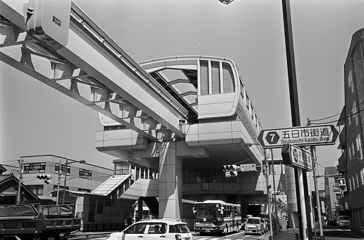
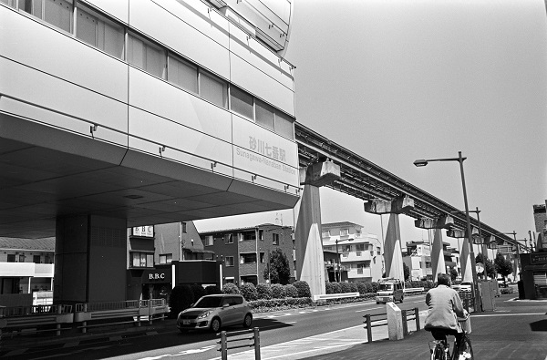
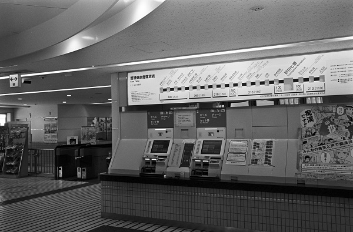
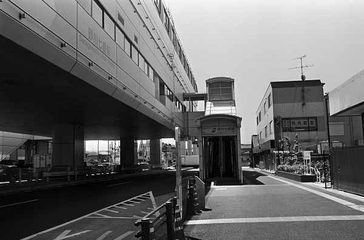

TT16_多摩ﾓﾉﾚｰﾙ線
TT_砂川七番駅 Sunagawa nanaban
泉体育館駅←← 多摩ﾓﾉﾚｰﾙ線 →→玉川上水駅

2019/5/8 ﾐﾉﾙﾀCLE＋ｽﾞﾐｸﾛﾝ35mm ｱｸﾛｽ

2019/5/8 ﾐﾉﾙﾀCLE＋ｽﾞﾐｸﾛﾝ35mm ｱｸﾛｽ

2019/5/8 ﾐﾉﾙﾀCLE＋ｽﾞﾐｸﾛﾝ35mm ｱｸﾛｽ

2019/5/8 ﾐﾉﾙﾀCLEF＋ｽﾞﾐｸﾛﾝ35mm ｱｸﾛｽ
戻る ﾎｰﾑ